The Select Files dialog appears and you can select the files to open.
The Close dialog appears and you can select the files to close.
- 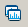
Spectra/chromatograms will be displayed in Single display mode.
- 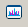
Spectra/chromatograms will be displayed in Overlapping display mode.
- 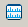
Spectra/chromatograms will be displayed in Stacked display mode.
- 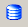
The Database dialog appears.
- 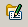
The Sample User Properties dialog appears.
- 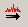
The previous spectrum is shown.
- 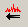
The next spectrum is shown.
- 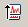
The precursor ion spectrum is shown.
- 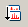
The product ion spectrum is shown.
- 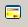
The heatmap is shown.
- 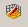
The 3D display is shown.
- 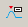
The Detect Peaks dialog appears.
- 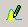
The peak areas turn yellow and become editable.
- 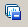
The Background Subtract dialog appears.
- 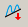
The Baseline Subtraction dialog appears.
The Filter Waveform dialog appears.
The RT Align Sample dialog appears.
- 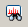
The Filter Spectra dialog appears.
- 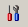
The Options dialog appears.
Mass++ Help appears.